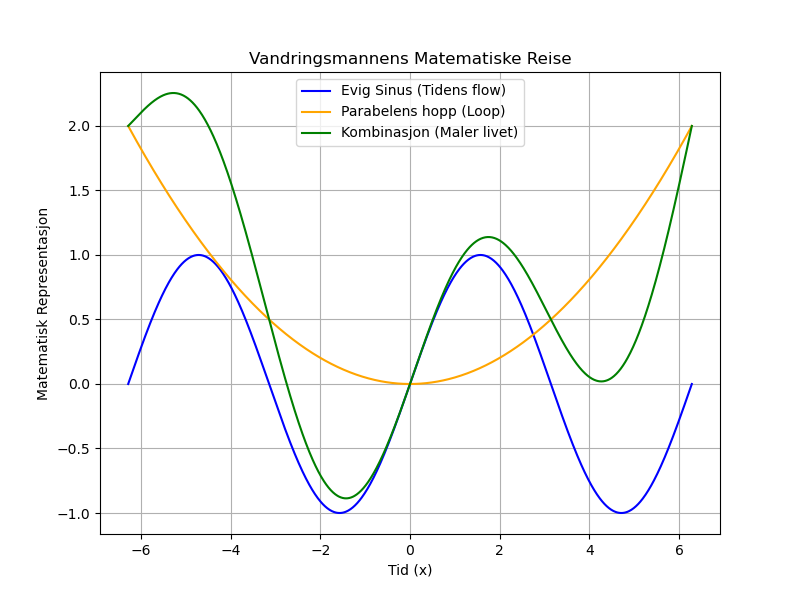

Dagens dikt
Vandringsmannen går som en linje,
uendelig lang, og evig i sinne.
Hvert skritt er en variabel i tidens flow,
en sirkel han bærer, med tall som må.
Fra null til én, han svinger seg rundt,
evigheter i sinus, en evig bunn og toppens grunn.
Parabelens hopp, en loop som varer,
matematisk liv, i hans handlinger, maler.

Kode
import numpy as np
import matplotlib.pyplot as plt
# Definer vandringsmannens reise som matematiske funksjoner
x = np.linspace(-2 * np.pi, 2 * np.pi, 1000) # Linjen gjennom tid
sin_wave = np.sin(x) # Evig sinusbevegelse
parabola = x**2 / (2 * np.pi**2) # Parabelens hopp
# Kombiner sinus og parabel for en kompleks vandring
combined = sin_wave + parabola
# Plot vandringsmannens matematiske reise
plt.figure(figsize=(8, 6))
plt.plot(x, sin_wave, label='Evig Sinus (Tidens flow)', color='blue')
plt.plot(x, parabola, label='Parabelens hopp (Loop)', color='orange')
plt.plot(x, combined, label='Kombinasjon (Maler livet)', color='green')
# Dekorer plottet
plt.title("Vandringsmannens Matematiske Reise")
plt.xlabel("Tid (x)")
plt.ylabel("Matematisk Representasjon")
plt.legend()
plt.grid(True)
plt.savefig('2025-03-20-20-02-04.png')